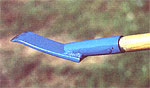
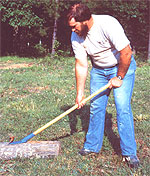
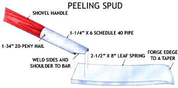

This particular spud's not meant for eatin' ... though it certainly peels nearly as well.
If you're contemplating any kind of cordwood or log construction, you'll eventually be faced with the knotty problem of debarking your timber ...and using a tool illsuited to the task can reap you a world of frustration-smack at the start of your project!
Now, we've made a log spud or two here at MOTHER, and to be truthful, some couldn't peel the skin off a grape ...but Eco-Village staffer Rick Compton knocked one together some time ago (in preparation for erecting our log woodcrafts shop) that made the job at hand seem almost easy. It's similar in design to a bark peeler detailed in a book by R.D. Arcand entitled Log Building Tools & How to Make Them (currently out of print but possibly available through a reference library), but Compton's version is somewhat easier to make than that one and, we suspect, functions just as well.
The tool's built a bit on the heavy side to handle both pine and thicker-skinned logs, and consists of nothing more than a section of big-car or pickup-truck leaf spring ...a hunk of 1-1/4" Schedule 40 pipe ...an old shovel handle ...and a 20d spike.
If you want to try your hand at making this model, first cut an 8"-long piece of heavy spring with a torch, then heat one end of the blade bar to a dull red. While it's cooling, hammer the tip to a taper so the edges splay out, then set the bar aside to let it give up its heat to the air. Don't quench it in water.
Next, locate a 6" length of 1-1/4" black iron pipe, and drill a 1/4" hole through it about an inch from one end. With that done, temporarily slip your shovel handle into the socket, lay the cooled bar on top of a sample log, and place the neck of the tool alongside the leaf, gripping the handle at its end with your arm straight down at your side to establish a comfortable working height. Have someone mark the side of the pipe so you'll know at which angle to cut it and then do precisely that, leaving a small shoulder for the rear of the bar to butt against. (If you prefer to skin your timbers on short V-notched logs, remember to adjust the joint angle accordingly.)
Finally, weld the neck to the bar, drive the handle into the socket, and-after drilling a small pilot hole-lock the handle in place by hammering a 1-3/4" length of the spike through the bore and peening it over. Sharpen the tool's business end by wet-grinding it.
With a long shovel handle, the spud's actually comfortable to use. If you want a more positive grip and don't mind stooping a little, consider using a D-grip handle, such as one from a spade. In either case, the slight curvature in the spring will let you "rock" over knots ...and with the husky leaf, it'll seem like you're always debarking up the right tree!
|
 |
 |
 |